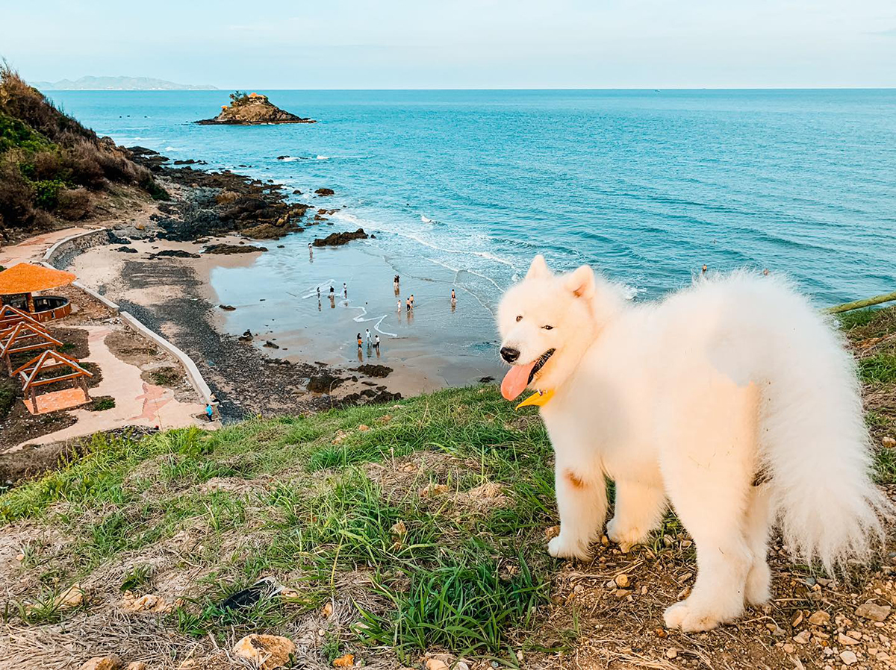
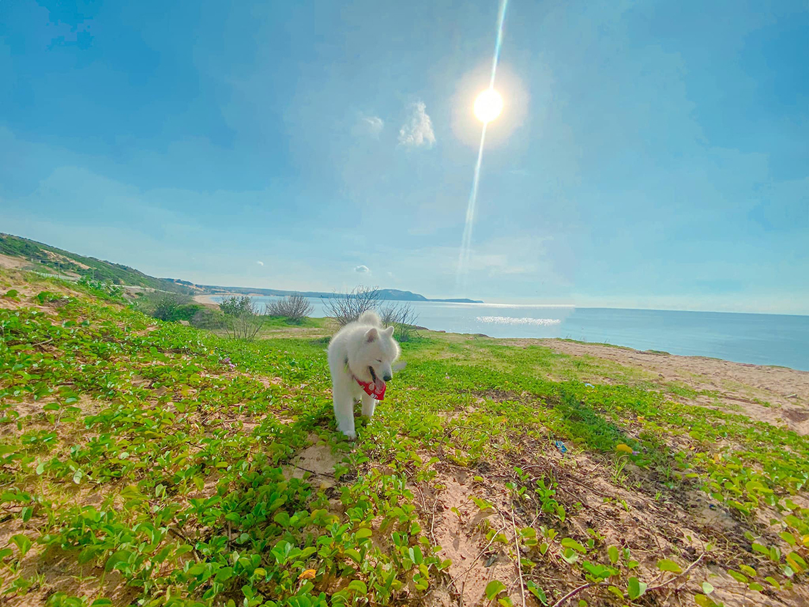
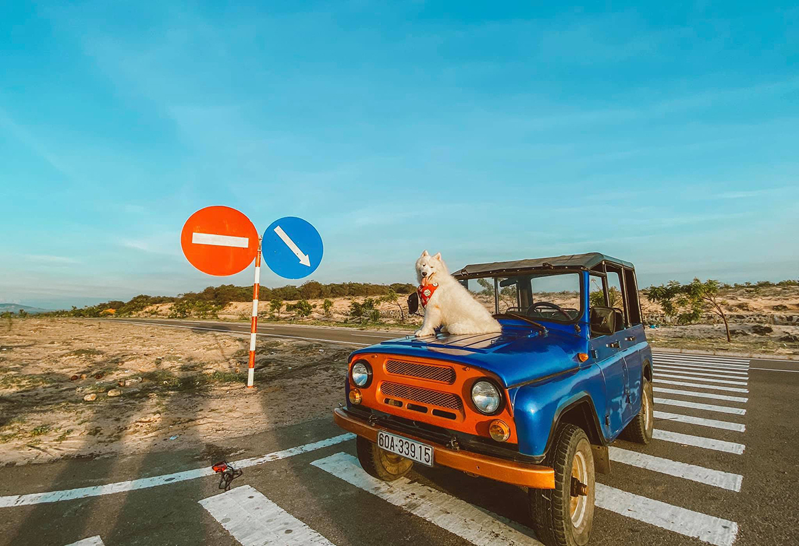

Chú chó du lịch khắp các bãi biển miền Nam
lebv - ngày 28/06/2021
Mùa hè năm 2020, Cồ (6 tuổi) thuộc giống chó Samoyed đã cùng cô chủ du lịch biển Vũng Tàu, Phú Quốc, Mũi Né...

Cồ thuộc giống chó Samoyed, 6 tuổi với bộ lông trắng tuyết, hiện sống cùng cô chủ Trần Ngọc Bảo Trân (1993) ở quận 10, TP HCM. Được cùng Cồ đi du lịch khắp nơi luôn là ước muốn của Trân. Vì vậy, từ năm 2018 khi công việc ổn định và có nhiều thời gian hơn, cô nàng đã quyết định "tậu" ôtô riêng để có thể cùng chó cưng đi bất cứ đâu.
Tháng 7/2020, Cồ có chuyến du lịch 2 ngày một đêm đến Vũng Tàu và được ghé lại chụp ảnh tại hồ Đá Xanh trên đường đi. Nước hồ màu xanh ngọc, mây trắng bồng bềnh trên cao tạo nên một khung cảnh hữu tình.
Đến với Vũng Tàu, Cồ được cô chủ đưa đi ngắm hoàng hôn ở Bãi Sau, gần mũi Nghinh Phong. Đây cũng là địa điểm thích hợp để tận hưởng gió biển về chiều. Từ trên cao, có thể nhìn thấy Hòn Bà thấp thoáng giữa làn nước biển trong xanh.
Giữa tháng 7, Bảo Trân tiếp tục cùng chó cưng đi du hí bãi biển đợt 2 để "trốn nắng" Sài Gòn. Điểm đến lần này là Mũi Né ở Phan Thiết, Bình Thuận. Theo lời Trân, Cồ đã có một trải nghiệm dở khóc dở cười tại đây, đó là bị té... đâm đầu xuống cát khi định lao tới rượt một chú chó đang chơi đằng xa.
Cô nàng còn thuê xe jeep để đưa người bạn 4 chân đi ngắm bình minh và tham quan Bàu Trắng. "Đó là lần đầu tiên Cồ được nghịch cát, nhưng vì là giống chó tuyết nên Cồ dễ bị mệt khi du lịch đến những vùng nắng nóng, mình luôn phải chuẩn bị nước cho Cồ", Trân nói.
Nhờ có Cồ làm bạn đồng hành mà mỗi chuyến đi của Bảo Trân đều đầy ắp niềm vui. Vấn đề khó khăn nhất với cô là phải tìm kiếm những điểm đến, hàng quán cho phép động vật. Đôi lúc Trân cũng gặp bất tiện khi luôn phải dắt dây và trông chừng Cồ mỗi lần ra ngoài, nhưng thấy chó nhà mình vui vẻ thì mọi khó khăn đều trở thành chuyện nhỏ.
Tháng 8, Cồ lên đường theo cô chủ đến đảo ngọc Phú Quốc. Chuyến hành trình kéo dài 5 ngày 4 đêm với nhiều trải nghiệm đáng nhớ như: ngắm bình minh ở Bãi Sao, săn sao biển ở Rạch Vẹm, đi cano đến các hòn đảo nổi tiếng của Phú Quốc, tắm biển, lướt sóng và vi vu chợ đêm.
'Cồ được cô chủ cho đi bơi ở Hòn Mây Rút. "Chú chó này biết bơi nhưng xuống nước bao nhiêu lần vẫn rất căng thẳng, cứ kéo ra xa là lại bơi vào bờ. Đối với Cồ, nước không chạm chân thì cứ như hố sâu tử thần vậy", Trân bật cười kể.
Bên quán bar sát cạnh bãi biển, Cồ ngồi đón ráng chiều buông trên bãi cát. Ngoài xa, mặt trời đỏ ối nhuộm lên không gian một lớp ánh sáng cam đầy lãng mạn.
Ước mơ cũng như dự định mà Trân luôn ấp ủ là có thể cùng Cồ du lịch xuyên Việt từ Nam ra Bắc. Cô nàng bày tỏ hy vọng sẽ được đồng hành cùng người bạn 4 chân của mình đi đến nhiều nơi hơn nữa, đặc biệt là các tỉnh miền Trung và miền Bắc sau khi dịch bệnh được kiểm soát.
Nguồn: Yến Nhi
Tin Xem Nhiều
- >> Kinh hoàng vụ bầy chó dữ cắn chết người phụ nữ đang đi đường
- >> Chú chó Shiba bán khoai lang nướng từng gây bão MXH thế giới đã qua đời
- >> Cô gái bật khóc nức nở khi nhìn thấy hình ảnh chú chó cưng đã qua đời xuất hiện giữa trời mây
- >> Wasao - chú chó lông dài nổi tiếng, từng là đại sứ du lịch Nhật Bản, trưởng ga tàu đã qua đời ở tuổi 13
- >> Sự thật bất ngờ về nhân vật "thầy chùa ăn thịt chó" xuất hiện trên Youtube
- >> Bất ngờ với những lợi ích tuyệt vời của việc nuôi chó